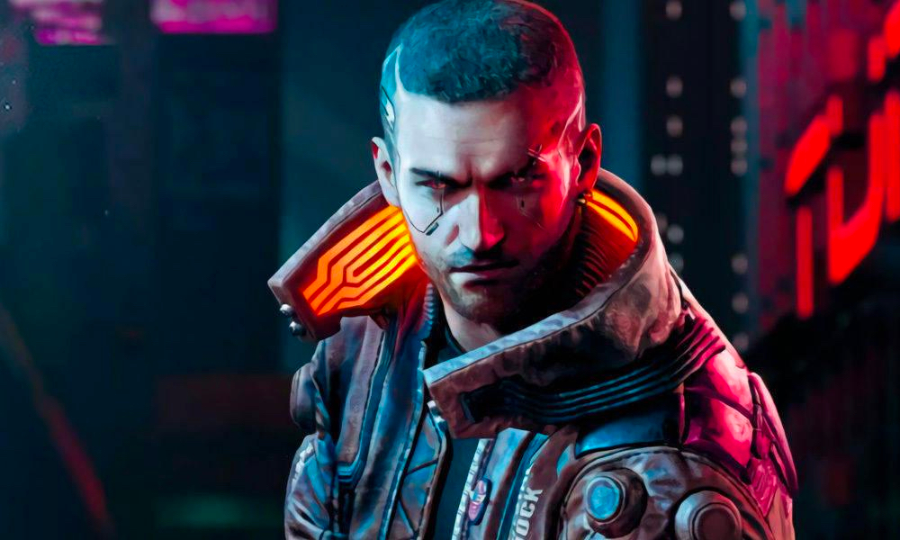
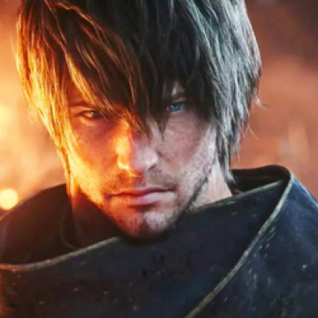

<!doctype html><html><!doctype html><html><head><title>PlatziGames</title><meta charset="utf-8"><meta http-equiv="X-UA-Compatible" content="IE=edge"><meta name="viewport" content="width=device-width,maximum-scale=1,user-scalable=no"><link rel="stylesheet" href="https://fonts.googleapis.com/css?family=Lato:400,400i,700,700i|Oswald:400,500,600,700&amp;display=swap"><script src="https://kit.fontawesome.com/552ebddad2.js"></script><link href="css/main-styles.css" rel="stylesheet"></head><body><script defer="defer" src="js/main.bundle.js"></script></body></html><body><header class="header--principal"><div class="logo logo--header"></div><nav class="nav--header"><ul><li><a href="#">Playstation</a></li><li><a href="#">Xbox</a></li><li><a href="#">Nintendo</a></li><li><a href="#">PC</a></li><li><a href="#">Mobile</a></li></ul></nav><a class="header__busqueda" href="#"><i class="fas fa-search"></i><span>Search</span></a></header><main class="contenedor--home"><a class="caja--con-fondo caja--grande"><div class="caja__imagen"></div><div class="caja--con-fondo__contenido"><span class="caja--con-fondo__categoria">Destacadas</span><h2>Cyberpunk 2077 tiene tres prólogos distintos</h2><p>En Cyberpunk 2077 los jugadores podrán seleccionar entre tres historias de origen diferentes, cada una presentando una ubicación de partida distinta para su personaje.</p></div><div class="caja--con-fondo__stats"><ul><li><i class="fas fa-share"></i><span>275</span></li><li><i class="fas fa-eye"></i><span>275</span></li><li><i class="fas fa-comment-alt"></i><span>12</span></li></ul></div></a><a class="caja--con-fondo caja--pequena caja-rdr2"><div class="caja__imagen"></div><div class="caja--con-fondo__contenido"><span class="caja--con-fondo__categoria">PS4</span><h2>Red Dead Redemption 2 llegará a PC</h2></div><div class="caja--con-fondo__stats"><ul><li><i class="fas fa-share"></i><span>275</span></li><li><i class="fas fa-eye"></i><span>275</span></li><li><i class="fas fa-comment-alt"></i><span>12</span></li></ul></div></a><div class="banner--homepage"><h3>Apex Legends Temporada 2: un nuevo trailer muestra cambios al mapa.</h3><p>Dos nuevos trailers de Apex Legends muestran lo que nos espera en la Temporada 2 del battle royale de Respawn.</p><a class="button">Leer mas</a></div><a class="caja--con-fondo caja--pequena caja-ff"><div class="caja__imagen"></div><div class="caja--con-fondo__contenido"><span class="caja--con-fondo__categoria">PS4</span><h2>Final Fantasy XIV recibirá una serie live-action en televisión</h2></div><div class="caja--con-fondo__stats"><ul><li><i class="fas fa-share"></i><span>275</span></li><li><i class="fas fa-eye"></i><span>275</span></li><li><i class="fas fa-comment-alt"></i><span>12</span></li></ul></div></a><a class="caja--con-fondo caja--pequena caja-xbox"><div class="caja__imagen"></div><div class="caja--con-fondo__contenido"><span class="caja--con-fondo__categoria">XBOX</span><h2>Conoce las actualizaciones de XBOX Game Pass</h2></div><div class="caja--con-fondo__stats"><ul><li><i class="fas fa-share"></i><span>275</span></li><li><i class="fas fa-eye"></i><span>275</span></li><li><i class="fas fa-comment-alt"></i><span>12</span></li></ul></div></a><a class="caja--con-fondo caja--pequena caja-fortnite"><div class="caja__imagen"></div><div class="caja--con-fondo__contenido"><span class="caja--con-fondo__categoria">FORTNITE</span><h2>Fortnite une fuerzas con Stranger Things</h2></div><div class="caja--con-fondo__stats"><ul><li><i class="fas fa-share"></i><span>275</span></li><li><i class="fas fa-eye"></i><span>275</span></li><li><i class="fas fa-comment-alt"></i><span>12</span></li></ul></div></a><a class="caja--con-fondo caja--mediana caja-zelda"><div class="caja__imagen"></div><div class="caja--con-fondo__contenido"><span class="caja--con-fondo__categoria">Switch</span><h2>Secuela de The Legend of Zelda: Breath of the Wild anunciada en el E3 2019</h2></div><div class="caja--con-fondo__stats"><ul><li><i class="fas fa-share"></i><span>275</span></li><li><i class="fas fa-eye"></i><span>275</span></li><li><i class="fas fa-comment-alt"></i><span>12</span></li></ul></div></a><div class="sidebar--listado"><h3>Noticias Destacadas</h3><ul><li><a href="#"><span class="sidebar--listado__numero">1</span><span class="sidebar--listado__titulo">GTA VI: Filtraciones que son bastante dudosas</span></a></li><li><a href="#"><span class="sidebar--listado__numero">2</span><span class="sidebar--listado__titulo">Secuela de The Legend of Zelda: Breath of the Wild anunciada en el E3 2019</span></a></li><li><a href="#"><span class="sidebar--listado__numero">3</span><span class="sidebar--listado__titulo">Red Dead Online recibe actualización masiva y sale de Beta</span></a></li></ul></div></main><footer class="footer--principal"><div class="logo logo--footer"></div><nav class="nav--footer"><ul><li><a href="#">Playstation</a></li><li><a href="#">Xbox</a></li><li><a href="#">Nintendo</a></li><li><a href="#">PC</a></li><li><a href="#">Mobile</a></li></ul></nav><div class="nav--social"><ul><li>Siguenos</li><li><a href="#"><i class="fab fa-instagram"></i></a></li><li><a href="#"><i class="fab fa-pinterest"></i></a></li><li><a href="#"><i class="fab fa-twitter"></i></a></li><li><a href="#"><i class="fab fa-facebook-f"></i></a></li></ul></div></footer></body></html>